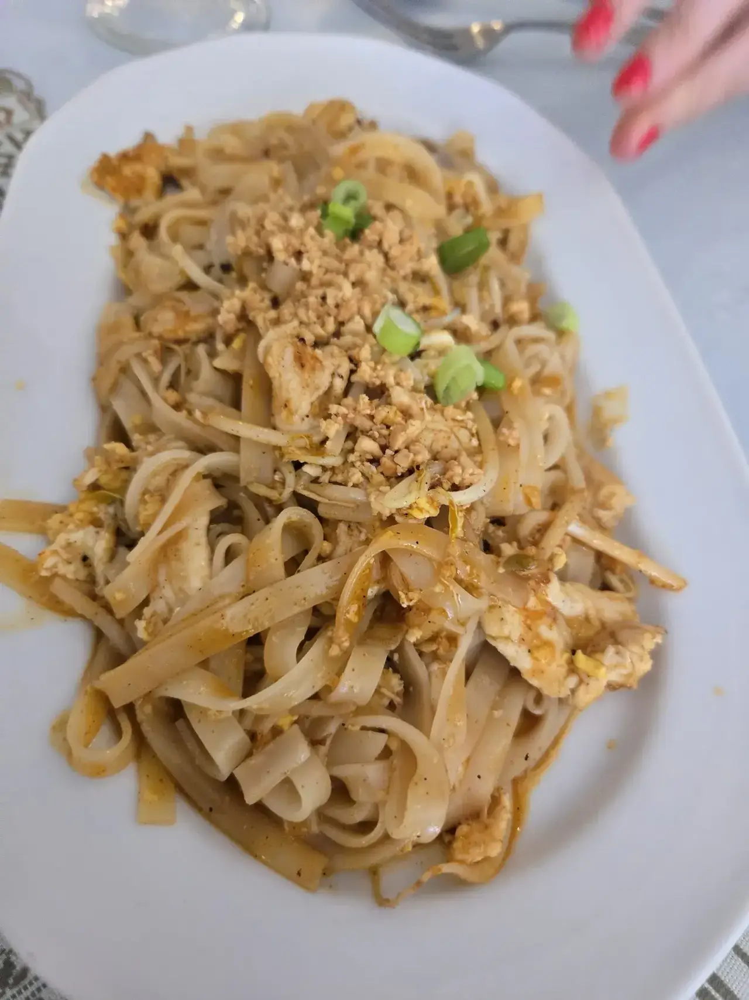
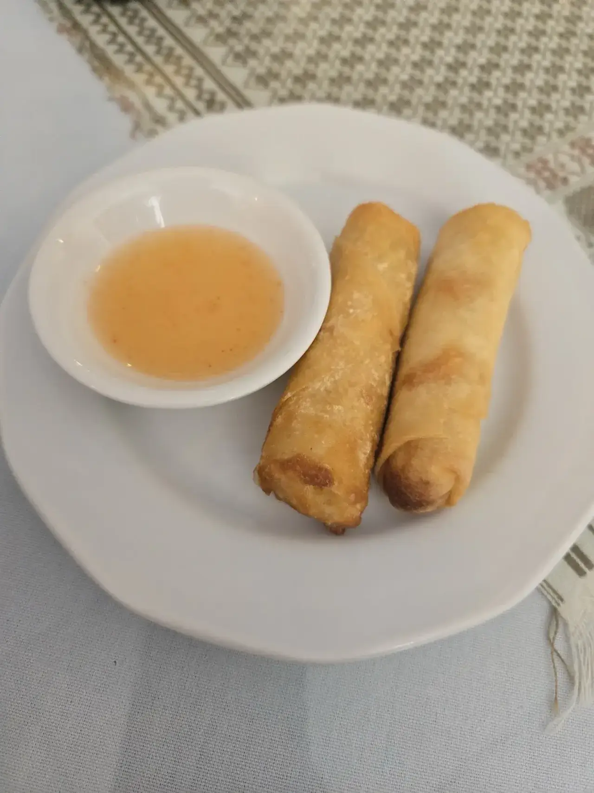

Noodles
Pad Thai and wide rice noodles with chicken, plated generously.
Cafe de Siam · Carrollwood
Cafe De Siam serves Carrollwood from Tampa.
Coming from Carrollwood? Cafe De Siam is on West Hillsborough Avenue in Tampa. Thai lunch specials, curries, noodles and take out.
Plates reviewers and the menu lead with.

Pad Thai and wide rice noodles with chicken, plated generously.

Crispy spring rolls with plum sauce, plus fresh spring rolls guests say are very different from Vietnamese ones.

Dine-in lunch specials come with spring rolls and dessert of the day.
4.6 276 Google reviews
I am not sure how we missed Cafe De Siam, as we live so close. The food and service was outstanding. There were very few people seated in the cafe, but they obviously do a very busy take out business. The fresh spring rolls were really good, and very different from Vietnamese fresh rolls. The chicken with red curry was excellent. We found the prices to be very reasonable.
I love this Thai food , and this place did not disappoint! The lunch combo was really good, and the portions were generous and satisfying. Everything tasted fresh and flavorful. I just wish they were open on Saturdays afternoon and Sundays too, I would definitely visit more often!
SO GOOD!! Amongst everyone in our party we tried 2 apps, soup, 6 entrees, and dessert and each that I tried was delicious! It was nice and quiet to eat and our server was so sweet and friendly! If you like Thai food you need to stop here!